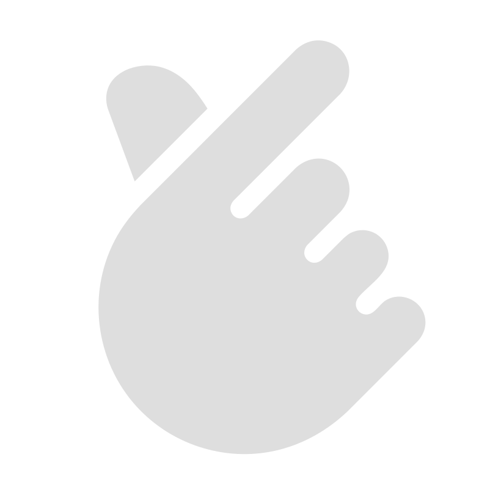

01
Flexbox의 기본 개념을 시각적으로 확인하는 섹션입니다. display: flex가 적용되었을 때 요소들이 어떻게 정렬되는지 영상으로 직관적으로 보여줍니다.

leeminseo 2026 leeminseoFlexbox의 기본 개념을 시각적으로 확인하는 섹션입니다. display: flex가 적용되었을 때 요소들이 어떻게 정렬되는지 영상으로 직관적으로 보여줍니다.
justify-content 속성을 활용해 가로 축(main axis) 정렬 방식의 차이를 비교합니다. start, center, space-between의 변화를 확인할 수 있습니다.
align-items를 통해 세로 축(cross axis) 정렬이 어떻게 달라지는지 설명합니다. height가 있는 경우와 없는 경우의 차이를 함께 보여줍니다.
flex-direction과 flex-wrap을 조합해 레이아웃 흐름이 어떻게 변화하는지 살펴봅니다. 실무에서 자주 쓰이는 패턴을 예제로 구성했습니다.